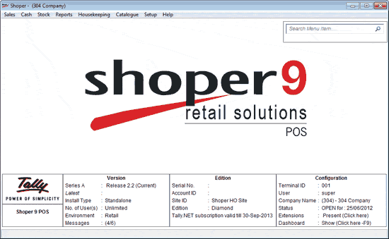

Shoper Info Panel provides quick information about the product. It also facilitates creation of user desired quick access icons and dynamic menu search.
The Shoper Main Menu is displayed as shown.

Shoper Info Panel has three parts Version, Edition and Configuration.
Version:
Series A: Displays current Shoper release
Latest: Displays latest Shoper release available in web
Install type: Displays type of installation such as Standalone, Server or Client
No of Users: Displays number of users supported by this installation such as Single, Unlimited, etc.
Environment type: Display type of environment installed such as Retail, Distributor.
Message: Click to view messages sent from Shoper 9 HO. Click here for more details.
Edition: Edition panel provides license information.
Serial no: Displays Shoper serial number.
Account ID: Displays Account Id with which the license is activated.
Site id: Displays the Site Id for the license.
Edition: Displays type of license such as Silver, Gold or Diamond.
Displays the validity of Tally.NET subscription.
Configuration:
Terminal ID: Displays the terminal Id of the installation.
User: Displays the user name with which Shoper is logged in.
Company Name: Displays the company name along with the company code.
Status: Displays Shoper status such as open or close along with Shoper date.
Extensions: Click to display currently enabled extensions.
Dashboard: Click to display dashboard report. Alternately you can press F9 button.